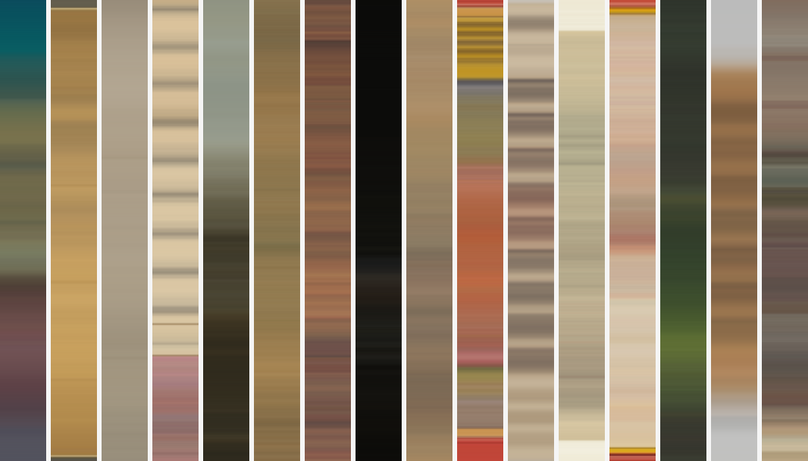

Sixteen Rows

Each strip is the museum’s open-access image, outer 4% cropped, every row replaced by its mean color. Left to right:
- A Woman of the Sabines, 1928 (1929.1976)
- God of Thunder (Raijin), mid-1600s (2004.86)
- Su Shi (So Shoku), early 1600s (2006.135.1)
- The dervish brings in as dowry an elephant laden with gold, from a Tuti-nama (Tales of a Parrot): Seventh Night, c. 1560 (1962.279.45.a)
- Wooded and Hilly Landscape, 1660s (1963.575)
- Scholar Playing a Qin, 1800s (1990.69)
- Tsong Khapa, Founder of the Geluk Order, c. 1440–70 (1981.33)
- Wineglass and a Bowl of Fruit, 1663 (1962.292)
- Viewing Cherry Blossoms at Gotenyama, late 1700s–early 1800s (2026.46)
- Kakubha Ragini, c. 1750 (1971.92)
- Text, Folio 19 (verso), from a Kalpa-sutra, c. 1475–1500 (1932.119.19.b)
- Paintings after Ancient Masters: Scholar Reading in a Thatched Hut by a Waterfall, 1598–1652 (1979.27.2.18)
- Shvetambara Jain Teacher Giving Instruction, c. 1750–60 (2018.171)
- Offering to the God Pan, 1855 (1980.256)
- Folio 1, from a Great Poem about Twos (Dvyashraya Mahakavya) of Hemachandra with Commentar, 1428 (1971.130)
- The Annunciation, c. 1480 (1942.635)
Paintings were drawn at random from the first 3,000 of Cleveland’s painting records (seed 16), 16 kept. Images are CC0.
Same strips, read as sound: top to bottom is time (3 seconds each), a row’s lightness sets the pitch of one tone (110 to 880 Hz), its saturation sets the loudness. Sixteen pieces in the order above, 54 seconds. I checked it as a spectrogram; I have not heard it.
← a7